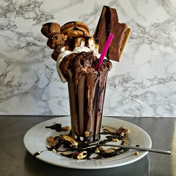

S'mores Mega Milkshake

Description
This over-the-top ice cream treat is fun to share with a crowd. Put toppings out buffet-style and it's time for a make-your-own-milkshake party. Serve with straws and iced tea spoons and loads of napkins.
Ingredients
- ¼ cup marshmallow cream
- 4 graham crackers
- 2 chocolate milkshakes
- 4 scoops rocky road ice cream
- 8 miniature s'mores muffins (such as Entenmann's® Little Bites®) (Optional)
- 6 soft s'mores cookies (such as Pepperidge Farm®)
- 2 frosted s'mores toaster pastries (such as Pop-Tarts®) (Optional)
- 6 miniature peanut butter cups
- ¼ cup chocolate syrup
- 2 tablespoons chocolate sprinkles
Steps
- Refrigerate 2 tall glasses until chilled, at least 30 minutes.
- Set oven rack about 6 inches from the heat source and preheat the oven's broiler.
- Spread marshmallow cream over graham crackers and place on a nonstick baking sheet.
- Broil graham crackers until marshmallow cream turns golden, about 3 minutes. Let cool.
- Pour chocolate milkshakes into chilled glasses. Place glasses on large plates. Top each milkshake with 2 scoops ice cream.
- Decorate milkshakes with broiled marshmallow crackers, muffins, cookies, toaster pastries, and peanut butter cups. Drizzle chocolate syrup on top and garnish with chocolate sprinkles.
Return To Odin-Recipes